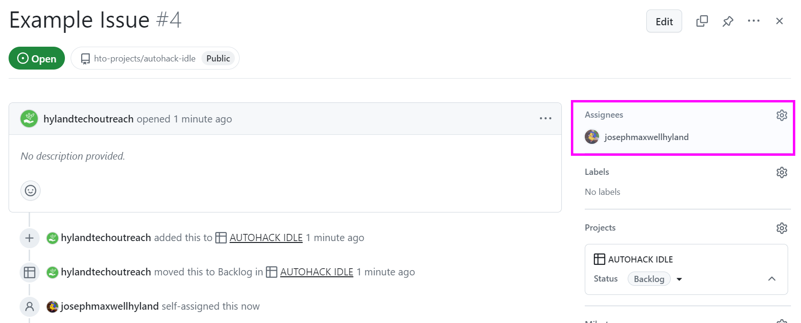
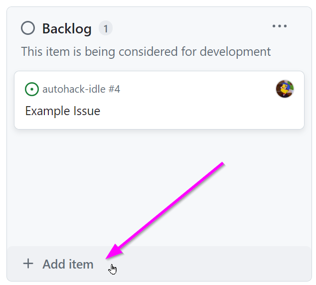
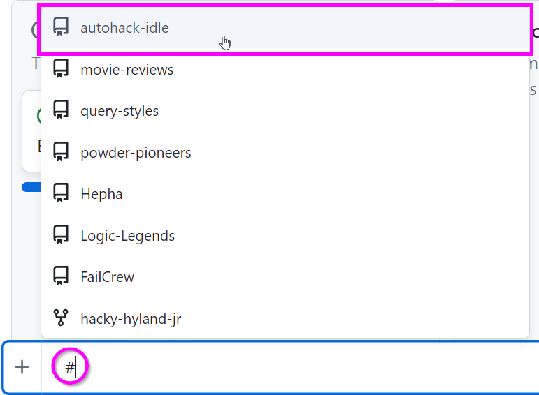
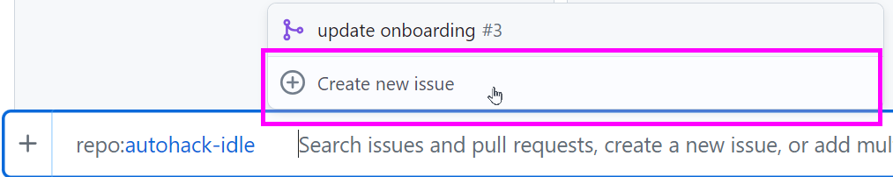
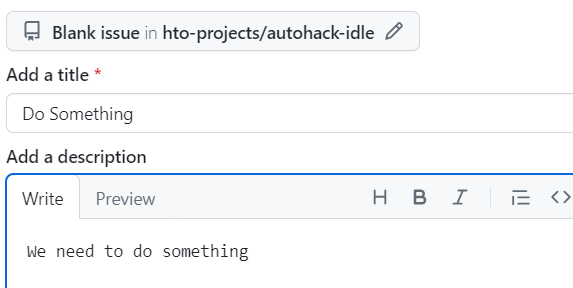
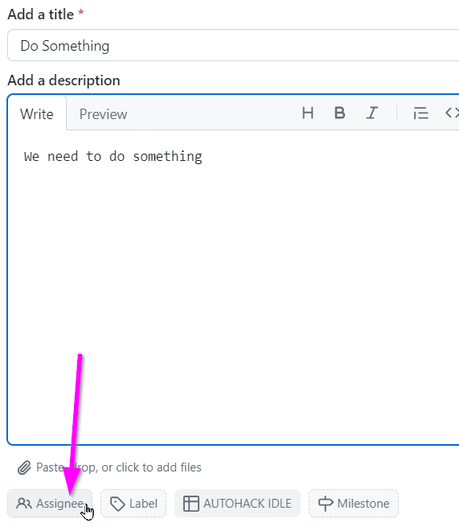
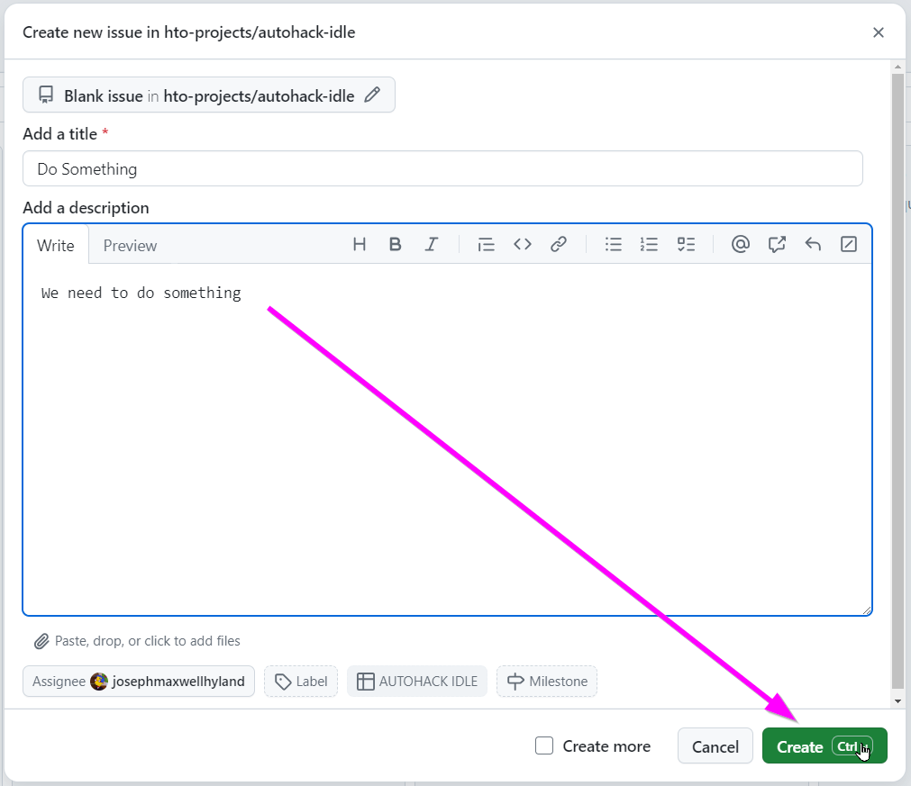
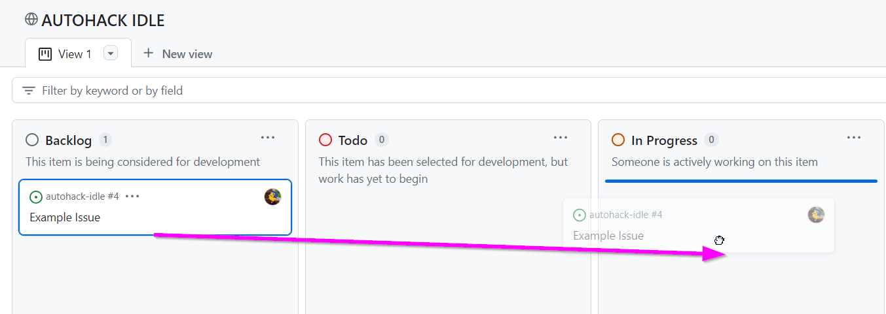
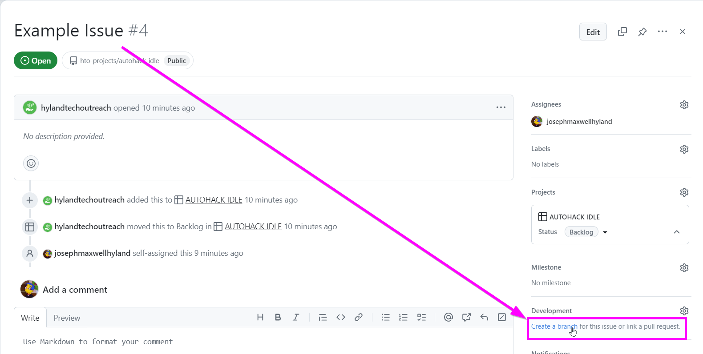
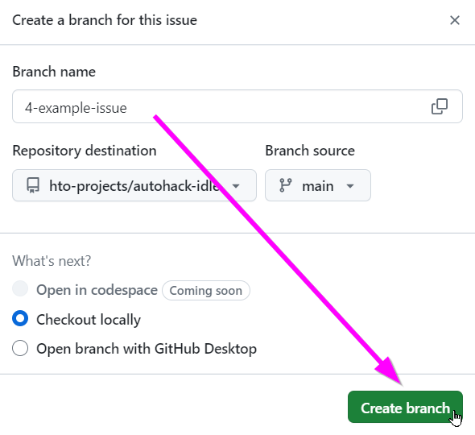

Contribution Guide
In order to contribute to the project in GitHub, you will need to follow these steps.
Note: Using Git, there are many ways to accomplish these tasks. This guide tends to use the command line, but all of this can be done through the VS Code GUI as well.
Registering for a GitHub Account
The first thing you'll have to do is create a GitHub account. Go to github.com/signup, and do what it says. For this project, use a personal email/account - this will ensure you have access beyond the timeframe of the summer.
Once you have an account, share your username with Joseph (or another Hyland mentor) to be added as a collaborator to the repository.
Local Account Configuration
In order to commit locally, you will need to properly configure your account on your computer. In the command line, you can use these commands to set your name and email:
git config --global user.name "FIRST_NAME LAST_NAME"
git config --global user.email "MY_NAME@example.com"
Be sure to replace FIRST_NAME LAST_NAME with your first & last name, and replace MYNAME@example.com with your email address.
Authentication
In order to push changes to the remote repository, you will need to authenticate yourself. You should be prompted to sign in the first time you attempt to push. After that, it should save your authentication information for any future pushes.
Starting from an Issue
For every piece of development work, there should be a corresponding issue on the project board. If you are working on an issue, you should be assigned under the "Assignees" field:

Creating Your Own Issue
As the project progresses, you will have the opportunity to create your own issues.
- Open the board
- Click the "+ Add item" link under the appropriate column
 - Type in a hashtag (
#) and select the proper repo (in this case: hytop)
 - Click "Create new issue"
 - Enter a title and description
 - Set yourself as the assignee
 - Click the "Create" button

Now you have an issue ready for development.
Creating a Feature Branch
Once you have an issue and it has been properly assigned to you, it's time to start working on it. Work will be done in a feature branch.
- Open the board
- When you're ready to work, drag the issue into the "In Progress" column
 - Click the issue to open it
- Click the "Create a branch" link in the bottom right of the issue view
 - Click the "Create branch" button in the pop-up

Now your feature branch is ready for development.
Checking Out the Branch Locally
Right after you create the branch, some terminal commands should pop up; these will let you locally check out the branch for development.
Note: Make sure to stash any in-progress changes before checking out a new branch!
- Open the HyTOP project in VS Code
- Open a new terminal with
Ctrl+` - There, enter the first command:
git fetch- This grabs the latest version of the remote repository
- Next, enter the second command:
git checkout BRANCH_NAME- This switches your local clone to the
BRANCH_NAMEbranch - Be sure to replace
BRANCH_NAMEwith the feature branch name
- This switches your local clone to the
Now, your environment should be setup to commit changes to your local feature branch.
Doing the Work
The next step is to actually change the code in the files for the issue. Once you've made the changes and verified that the issue is resolved (to the best of your ability), you will want to add them and commit them to your local branch.
Pushing to the Remote Feature Branch
Once changes are committed (i.e., saved) to your local branch, it's time to push them up to the remote feature branch. This is possible using the VS Code GUI, or simply the git push command. Depending on how your branch was created, it may be necessary to set the upstream so your local feature branch properly points to the remote feature branch.
This will also require user configuration and authentication, as well as proper collaborator status within the repository - so make sure to share your GitHub username with the mentors, and use your credentials to push!
Pulling & Merging from the Main Branch
Throughout the development process, you should constantly be pulling the latest version of the main branch and merging it into your feature branch. These commands can accomplish this:
git checkout main
git pull
git checkout BRANCH_NAME
git merge main
Depending on the situation, you also might want to rebase. There are a lot of thoughts about this. Just go with whatever works and whatever's easiest.
Creating a Pull Request
Finally, when all the code for your change is up on the remote feature branch, you're ready to submit a pull request. This can be done through the GitHub Web interface in a number of ways.
- Visit the compare page for the repository
- Set main as the "base", and your feature branch as the "compare"
- Review the changes and make sure they look good
- Click the "Create pull request" button
- Fill out any other necessary information as needed
- Let the team know you have a new PR out for review!
Once your pull request has been created, team members will be able to view your changes and complete a code review. This will determine whether or not your change is ready to be merged.
Merging the Pull Request
After another team member has reviewed your code and approved the change, it's ready for merging into the main branch. As the person who made the change, do not merge the change into main by yourself. Make sure at least one other team member has seen and approved the change - this will help assure quality for the application.
Change Not Ready
If someone reviews your code and finds something wrong with it, you can go back and continue to make changes on your feature branch. These changes will be reflected in your pull request.
Conclusion
This may seem like quite a few steps, but once you've done it a couple of times, it should hopefully become second-nature. There may still be issues that arise (like merge conflicts), but if you can follow this guide, you should be good for the most part!